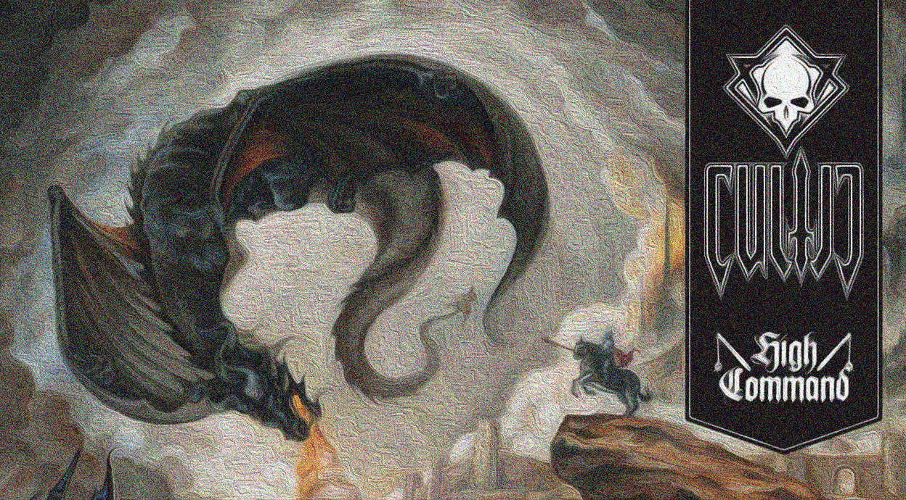
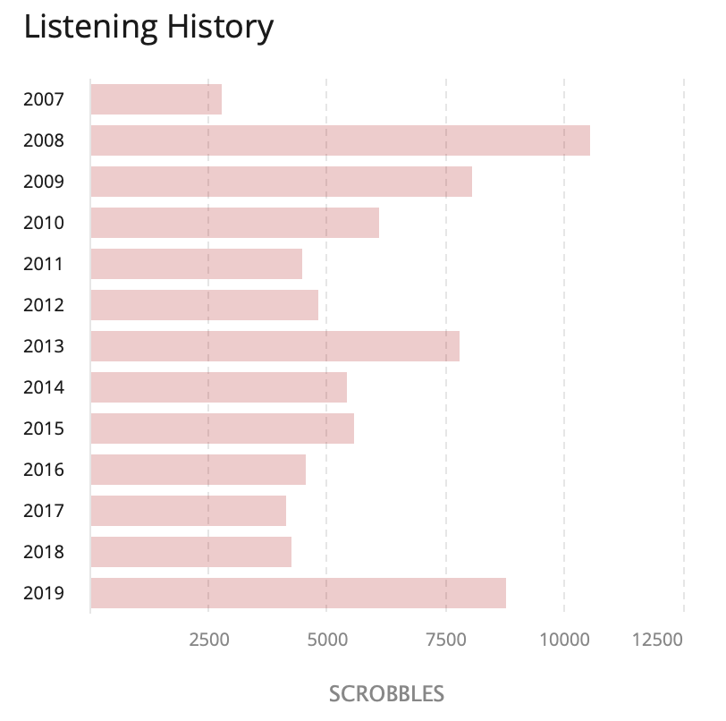
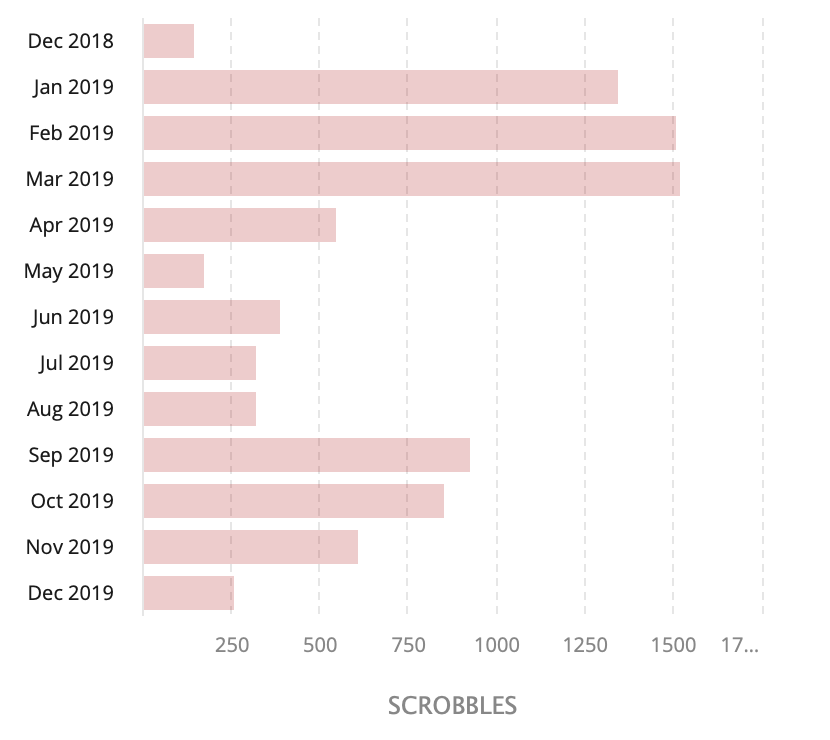

Artık eskisi kadar müzik dinleyemiyorum. Dinleme sayılarım bu görüşümle uyumlu değil belki, işe gidip gelirken muhakkak kulağımda kulaklığım Spotify’dan birşeyler dinliyorum elbette ama ağırlıklı olarak eskilerden veya kendi hazırladığım çalma listelerinden diniyorum. Yeni çıkan albümlerin takibi, yeni grupların keşfi Spotify’ın ve takip ettiğim 1-2 müzik sitesinin insafına kalmış durumda. Önerilen çoğu yeni(!) grup ve albümleri tahammül sınırlarımın uzağında kalıyor.
Bu yılın ilk yarısında daha kaliteli müzik dinleyebilmek için satın aldığım AudioQuest DragonFly Red DAC ile deneme amacıyla hem Qobuz hem Tidal gibi müzik sitelerini hem de Roon programını kullandım bir süre. Bununla birlikte Bandcamp’de yeni sludge/doom grupları bulmama yardımcı oldu. Bu süre zarfında dinlediğim şarkı sayısındaki artış bu etkenlere bağlanmalı.
Yıla şöyle bir baktığımda 2019 yılında çıkan ve ağırlıklı olarak dinlediğim albümler şu şekilde sıralanmış;

- Cultic - High Command
- Candlemass - The Door To Doom
- Flotsam and Jetsam - The End of Chaos
- Mark Morton - Anesthetic
- Overkill - The Wings of War
- Witchfinder - Hazy Rites
- Mgła - Age of Excuse
- Mizmor (מזמו) - Cairn
- Kadavar - For The Dead Travel Fast
- Mayhem - Daemon
- Golden Core - Fimbultyr
- Deep Dark River - Leviathan and the Deep Dark Blue
- None - Damp Chill of Life
Bunlarla birlikte 2019’da önce çıkan ama bu yıl dinleme fırsatı bulabildiğim albümler ise şöyle;
- Bell Witch - Mirror Reaper
- Golden Core - Norwegian Stoner Machine
- Blaze Bayley - Endure and Survive
- Blaze Bayley - Redemption of William Black
- Ravens Creed - Tüm Albümler
- Bloodbath - The Arrow of Satan is Drawn

Last.fm ile müzik istatistikleri tutmaya başladığım dönemler içinde 2008’den sonra en çok şarkı dinlediğim yıl bu yıl olmuş gibi gözüküyor. Yıl içerisinde de Şubat-Mart ve Nisan en çok müzik dinlediğim aylar olmuş.

📝 2007-2015 Yılları Arası Müzik Dinleme İstatistikleri ile ilgili yazım burada yer alıyor.